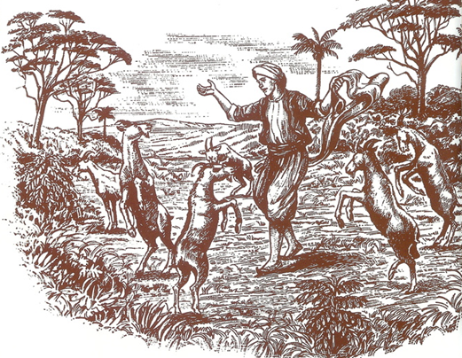
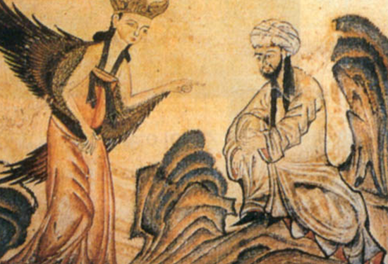
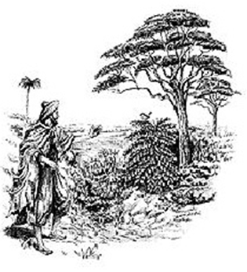
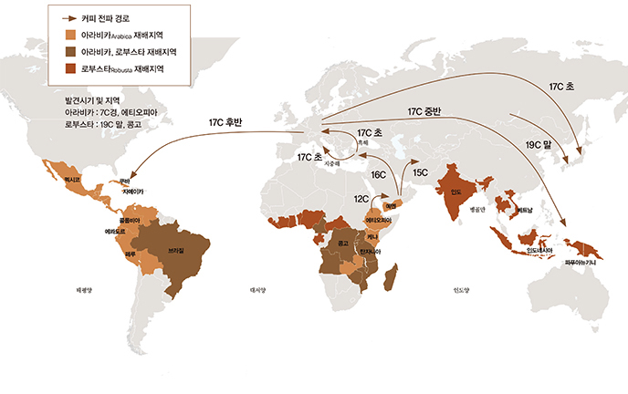
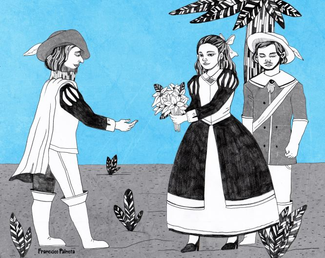
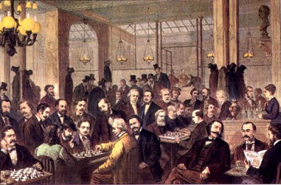

첫 번째 가설은 에디오피아의 목동 칼디의 발견설입니다.
덤불 속 어떤 나무의 붉은 열매를 따먹은 자신의 염소들이 평소보다 밤늦게까지 흥분상태로 뛰어다니는 걸 보게됩니다.
궁금한 칼디도 그 열매를 먹어보게 되고, 정신이 맑아지고 힘이 솟는다는 사실을 알게되어, 근처 이슬람사원 승려에게 이 사실을 알립니다..
이것을 악마의 장난으로 간주한 승려가나무와 열매를 태우자 향긋한 냄새가 퍼지기 시작했습니다.
그 냄새를 맡은 승려는 각성효과가 있다고 판단하여, 수행을 위한 기도시간에 잠을 쫓기 위해 마시기 시작하였다고 합니다.
두 번째 가설은 무함마드의 전설입니다.
이슬람교의 창시자이자 예언자인 무함마드가 병에 걸려 앓고 있을 때 꿈에 천사 가브리엘이 나타나 커피의 나무와 열매를 보여주었습니다.
그 열매를 먹은 무함마드는 병이 나아 40명의 장정을 말에서 떨어뜨리고 40명의 여자를 거느리게 되었다는 재미있는 전설입니다.
세 번째 가설은 아라비아 부족장 오마르의 발견설입니다.
아라비아의 부족장 하지 오마르(Hadji Omar)는 모카에서 기도의 신비한 능력으로 많은 사람을 치료해주었다고 합니다.
마침 중병에 걸린 성주의 딸을 치료하게 되었지만 그녀와 사랑을 하다 미움을 사서 예멘의 산으로 추방되었습니다.
그러던 중 숲 속에서 허기를 느끼며 새소리를 듣고 따라간 곳에서 빨간 열매를 발견하고, 그것을 먹고 난 후 원기가 솟는것을 느꼈습니다.
그는 다시 살아 모카로 돌아오게 되었고, 사람들에게 신비한 효능을 가진 음료를 알려주며, 모카의 성자로 추앙받게 되었다고 합니다.
에티오피아 지방에서 처음 발견된 커피는 이후 예멘 지방으로 옮겨져 경작됩니다.
이슬람 사람들은 각성 효과를 주는 커피가 신의 신통력이 깃들어있다고 생각해 알라를 믿지 않는 그리스도들로부터 커피의 존재를 철저히 숨겨왔습니다.
이후 오스만 제국이 강성해져 예멘 지역을 점령해 통치하기 시작하면서 커피는 전 세계로 퍼지기 시작했습니다.
예멘은 당대 유럽 최강국이였던 오스만 제국의 주요 무역 거점이 되었고, 전 세계에서 수많은 사람들이 모여들었습니다. 외국에서 온 많은 사람들이 커피의 매력에 푹 빠졌고,
그 사람들이 본국으로 돌아가면서 가져간 커피는 세계 각국의 사람들을 매료시켰습니다. 처음 가톨릭 국가들에 커피가 유입되었을 때 카톨릭 사제들이 이교도들의 음료, 야만인의 음료,
사악한 나무의 검은 썩은 물 등의 말로 폄하하며 교황에게 금지할 것을 요청했지만 교황이 오히려 커피에게 축복을 내렸고, 그 이후로 커피는 유럽 상류 사회 사이에 빠르게 퍼져나갔습니다.
이렇게 매력적인 커피를 모든 나라에서 재배하고 싶어했지만, 커피의 재배와 수출의 이익을 독점하고 싶었던 오스만 제국은 수출하는 모든 커피 원두를 볶은 상태로 수출하게 했고,
커피 묘목의 유통을 엄격하게 통제했습니다. 하지만 매의 눈으로 감시한다고 해도 오스만 제국이 영원히 커피를 독점하는 것은 불가능했습니다.
1600년 경, 성지 순례를 위해 이슬람교 성지 메카에 찾아온 인도 무슬림 바바부단은 그곳에서 커피에 푹 빠지게 되었습니다. 인도로 돌아가면서 그는 더 이상 커피를 마실 수 없는 것을 아쉽게 생각했고,
허리춤에 커피 일곱 알을 몰래 숨겨 본국으로 돌아갔습니다. 그가 가져온 커피콩들을 자신의 고향 땅에 심은 것을 시작으로 인도에도 커피가 재배되기 시작했습니다.
인도에 커피를 들여온 사람이 바바부단이라면, 네덜란드에는 피터 반 덴 브루켄이라는 사람이 있습니다. 그는 1616년 예멘의 커피 무역항이였던 모카 항에서 커피 묘목 몇 그루를 본국의 수도 암스테르담으로
빼돌리는 데에 성공하여 식물원에 심어두었고, 1696년 경 당시 네덜란드의 식민지였던 자바 섬에서 커피를 대량 재배하기 시작했습니다. 네덜란드는 이 섬에서 재배한 커피를 유럽 각 나라들에 내다 팔아
큰 돈을 벌었습니다.
현재 커피 생산량의 1/3을 차지하는 커피 생산량 1위 국가 브라질. 브라질이 커피를 재배하게 된 계기에는 재미있는 이야기가 숨어있습니다.
1700년 경 네덜란드는 프랑스의 태양왕 루이 14세에게 커피 묘목을 선물합니다. 루이 14세는 자신의 왕궁 특별 정원에 심어 관리했습니다.
그러던 중 프랑스 장교 드 클루가 커피 재배를 위해 커피 묘목을
나누어 줄 것을 간청했지만, 루이 14세는 이를 거절했습니다.
그러자 그는 몰래 그 묘목의 일부를 꺾어 아메리카의 프랑스 식민지 마르티니크로 도망갔습니다.
그 곳에서의 커피 경작은 성공적이였고, 중남미와 서인도 제도에 그의 커피가 퍼졌습니다.
그 이후 브라질은 커피 묘목을 구하려고 했고, 1727년 프랑스령 기아나에 파헤타란 사람을 파견했습니다.
그는 기아나의 총독 부인과 사이가 가까워졌고, 총독 부인은 그와 이별할 때 커피 묘목을 꽃다발에 숨겨 선물했습니다.
그것을 계기로 브라질에서도 커피가 생산되기 시작했습니다.
한국에서 처음 커피를 마신 사람은 고종으로 알려져 있습니다. 1896년 그가 러시아 공사관으로 피신했을 때(아관파천), 러시아 공사가 대접한 커피를 마시고 그 맛에 푹 빠졌다고 합니다. 그 당시 한국에서 커피는 '양탕국' 또는 '가배'라는 이름으로 불리었고,
양반들은 외국인들로부터 커피를 선물받으면 두고두고 아껴 마셨다고 합니다. 그 이후 1902년 독일인이 한국에 처음으로 커피점을 개업했고, 일제 강점기에 수많은 커피 다방이 생겨납니다. 그후 해방과 6.25 전쟁을 거치며 미국의 인스턴트 커피가 널리 퍼지면서 서민들에게도 가까운 음료가 되었습니다.
첫 번째로, 커피는 지식인들을 한 곳으로 모으는 역할을 했습니다.
커피가 막 전세계로 수출되던 초기에는 커피는 고급 음료에 속했습니다. 자연스럽게 커피를 주로 소비하는 사람들은 부유한 지식인들이였고, 그들을 대상으로 하는 커피점들이 오스만 제국 곳곳에 생겨났습니다.
카페에 모여들은 지식인들 중에서는 오스만 제국에 반하는 언행을 하는 사람들이 많았고, 이를 싫어해 커피점들을 폐쇄해버렸던 총독이 술탄에게 쫓겨나는 일도 있었고, 술탄이 자신의 적들이 결집하는 것을 막으려 직접 커피점 영업을 금지하는 경우도 있었습니다.
1650년경부터 커피가 수입되던 영국에서는 런던과 옥스퍼드에 커피점이 처음 생겼습니다. 커피점은 신분에 관계 없이 모든 사람들에게 열려있었고, 철학자, 문인, 정치가들이 모여들면서 공화주의와 자유주의 사상의 불씨가 생겨났습니다. 1676년 영국 검사장이 영국 왕과 왕국에 대한 불경을 이유로 커피점들을 폐쇄하려
했지만 거센 반발로 무산될 정도로 커피점들은 영국의 정치와 역사에 큰 영향을 가지고 있었습니다.
커피는 프랑스 혁명의 촉발에도 큰 영향을 미쳤는데, 프랑스의 커피점들이 영국의 커피점과 마찬가지로 폐쇄적인 문화의 귀족 샬롱과 달리 개방적이었기에 수많은 계몽주의 철학자들과 부르주아들이 커피점에 모여 커피를 마시면서 자유롭게 정부와 교회 등 기존권력을 비판하고 이성에 기초한 새로운 사회질서를 모색하였습니다.
커피점이 자유사상과 민주주의의 학교가 되어 프랑스 혁명의 불씨를 키워낸 것입니다.
두 번째로, 커피는 막대한 이익을 안겨주는 무역 상품이며, 외교적 수단이였습니다.
전술했듯이, 브라질이 커피를 대량 생산하기 전까지 커피는 아주 희귀하고 비싼 물건이었습니다.
영국이 청나라를 상대로 아편을 팔아 막대한 이익을 챙기고 아프리카에서 후추가 재배되기 전까지 동로마 제국과 이슬람 제국들이 후추에서 막대한 이익을 챙긴 것처럼,
오랫동안 커피 무역을 독점하고 있던 오스만 제국, 유럽 국가 최초 커피 경작에 성공한 네덜란드는 커피 무역을 통해 막대한 이익을 챙겼습니다.
커피는 훌륭한 외교 수단이 되기도 했습니다.
1683년 오스트리아로 쳐들어간 오스만 제국이 그 이전에 사신을 보내 프랑스 루이 14세에게 전쟁에 끼어들지 않을 조건으로 커피 원두를 선물해주었습니다.
루이 14세도 커피를 좋아했는데 당시 커피 원두를 이슬람권에서 독점하고 있어 값이 비싸고 유럽권에선 구하기 힘들었기에 루이 14세가 무척 기뻐했습니다.
물론 그 대가로 오스만 제국의 전쟁에는 일절 끼어들지 않았습니다.